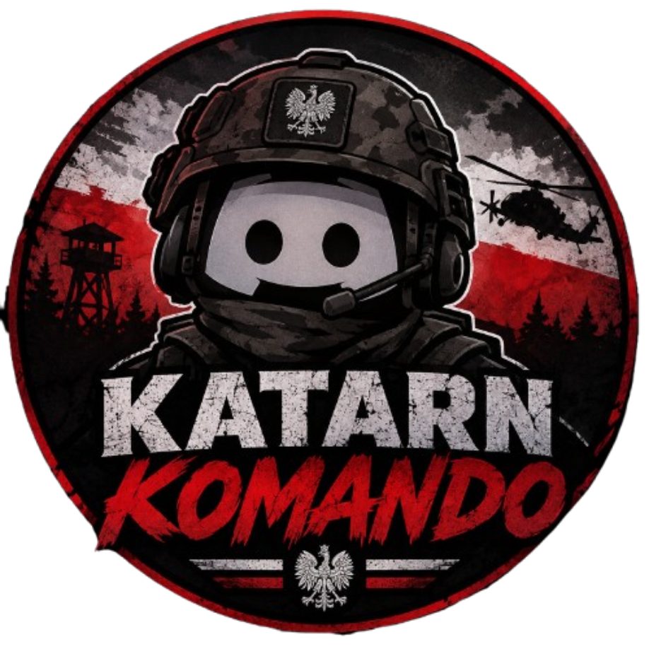

Bot
Tygrys jest to bot discord napisany dla serwera KATARN KOMANDO.
Ma on na celu zaautomatyzować procesy na serwerze dotyczące liczenia, biurokracji.
W tej documentacji poznasz funkcje bota, jego parametry oraz typy błędów.


Ma on na celu zaautomatyzować procesy na serwerze dotyczące liczenia, biurokracji.
W tej documentacji poznasz funkcje bota, jego parametry oraz typy błędów.
Developerem jest administrator zwany Proboszczem. Cały bot jest napisany w języku programowania Python.
Bot jest na hostingu 24/7. Developer posiada kopie kodu na własnym, prywatnym (z możliwością zmiany) repozytorium na GitHub (platforma gdzie programiści trzymają kod, współpracują nad 1 projektem itp.) oraz na własnych nośnikach danych
Dołączając do jednostki użytkownik automatycznie zgadza się na przechowywanie jego danych, zostaną one podane poniżej.
Bot jest obecnie w wersji 1.2 (stan na 11.11.2026r.).
Przyjmuje on następujące parametry:
Nick - jako text, string (str)
Liczbę pochwał - jako liczbę całkowitą, integer (int)
Liczbę uwag - jako liczbę całkowitą, integer (int)
Liczbę punktów - jako liczbę całkowitą, integer (int)
Liczbę obecności na treningach - jako liczbę całkowitą, integer (int)
Liczbę zwolnień z treningów - jako liczbę całkowitą, integer (int)
Liczbę nieobceności na treningach - jako liczbę całkowitą, integer (int)
Bot zapisuje dane na hostingu od razu po wprowadzeniu zmiany.
Natomiast na GitHub co 4 - 5 min, bądź na komende.
Developer może pobrać kopie danych w każdej chwili.
